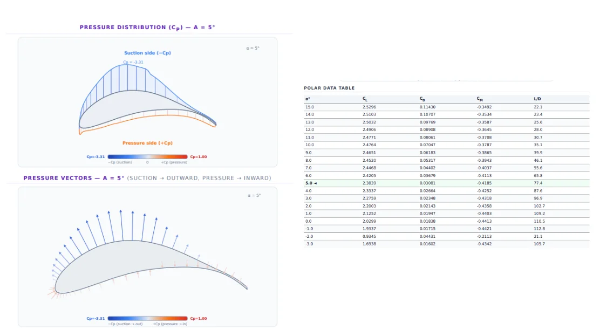
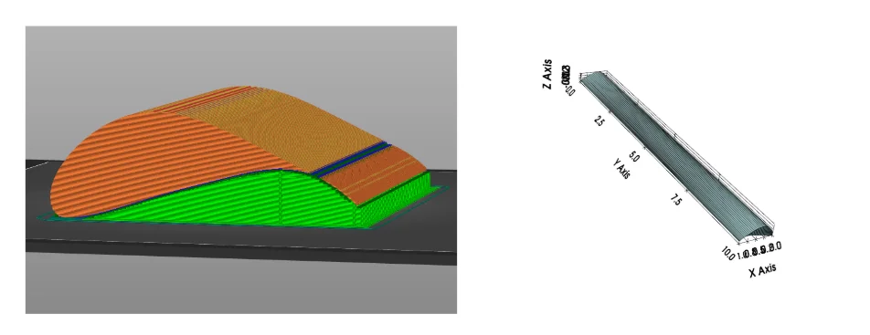

Wing Optimizer
A program to genetically optimize an airfoil. In the future, I hope to be able to chain together
multiple airfoils together to create an efficient propeller. This program rapidly optimizes
airfoils using Class Shape Transformation (CST) parameters, with evaluation performed by
NeuralFoil.
Originally this project was meant to create efficient and quiet fans to mount on a 76mm
3D-printed Newtonian telescope that I am also currently working on, but then it became its own
project.

1. Multiparameter Optimization Pipeline
The programs input are the target operational constraints (airspeed, expected angle of attack,
optimization parameters (in the form of the wanted list))
and runs many CPUs in parallel for wing optimization. The program cannot run on GPU because
NeuralFoil (the evaluation method) was built on Numpy, which can only run on CPU.
Below is the line that controls what is being optimized for. The NeuralFoil evaluator returns the
metrics that we can optimize for, for example, analysis confidence, coefficients of lift, drag and
moment are the ones that I am currently using in my program. The "WANTED_LIST" states the name of
the target metric, and the "IMPORTANCE_LIST" states how important each one is. Based on the code
below, it can be seen that the user (me) wants to optimize for the confidence of the evaluation,
then optimize for lift, then reduce coefficient of drag and moment. These are just default values
that I felt would be usable. I want to look into creating something that can dynamically create
these values in the future.
WANTED_LIST = ["analysis_confidence", "CL", "CD", "CM"] # List of target metrics to optimize (user-defined)
IMPORTANCE_LIST = [0.4, 0.3, -0.2, -0.1] # Relative weights for each metric in WANTED_LIST (user-defined)
- Multiprocessing Execution: Evaluation routines are distributed across CPU cores or offloaded to Modal cloud CPUs. On the free plan, up to a hundred CPUs can be run in parallel.
- Constraints: To ensure the program creates a wing that is physically possible, there is a suite of hard and soft constraints. Some example include: if the wings bottom section overlaps the top portion, the candidate is instantly discarded. Some of the soft constraints include optimizing for lift (depending on what has been specified in the wanted list).
Input Parameter Schema
These are the parameters that the optimization pipeline expects. The propeller program hasn't been created yet, but these are what I think will be required to create the propeller when I do get to making that portion of the project.
- Target Airspeed: Expected speed for the wing to be operating in. Note that if this is too high, the evaluator won't give accurate figures because it was only trained on a small range of numbers.
- Reynolds Number:How turbulent/laminar the airflow approaching the wing is. For this project, I just used 10e6, which is the center of the range the evaluation model can use (10e2 to 10e10)
- Angle of Attack:The angle at which the airfoil meets the incoming air.
- Wanted List: Specific weights prioritizing lift maximization, drag reduction, or structural stability.
- Motor Hub RPM: Rotational velocity used to calculate relative airspeed at each radial span section.
- Propeller Diameter: Specifically for curved propellers, this will be important so the program knows where to bend the propeller.
- Blade Count: The propeller blade will create air vortices which will affect the performance of the blades that come after it.

2. Neural Aerodynamic Evaluation
Instead of relying on slow (and expensive to run!), traditional CFD solvers inside the optimization loop, aerodynamic evaluation is offloaded to a neural network called NeuralFoil, which was created by Peter D. Sharpe. for his doctorate.
- NeuralFoil Integration: The system extracts the CST (Class Shape Transformation) parameters of a generated wing section and passes them through the NeuralFoil network. This rapidly predicts lift, drag and pitching moment coefficients to score the candidate design.
- Genetic Optimization: After evaluation, the airfoil is passed into a Covariance Matrix Adaptation - Evolutionary Strategy (CMA-ES) so it can create the next generation of candidate airfoils. This continues until it arrives at a satisfactory wing (according to the evaluator) or it runs out of time.
3. Installation Instructions
- Clone the repository using git bash:
gh repo clone Licheng-Zheng/propellerandwingoptimizer - Navigate to the project directory (only the
usingasbfolder is currently complete). - Install dependencies inside a virtual environment:
pip install -r requirements.txt - Run
main.pyfor local optimization. - For accelerated cloud execution, run
using_modal.pyin the root directory (ensure your Modal API key is set in your environment variables).